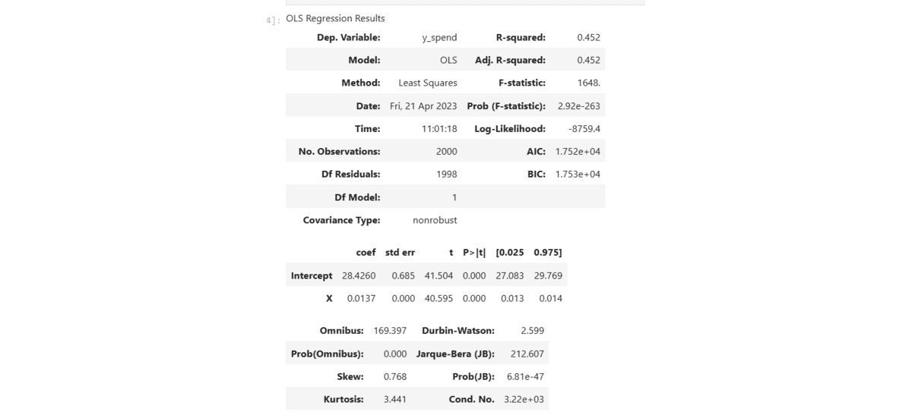
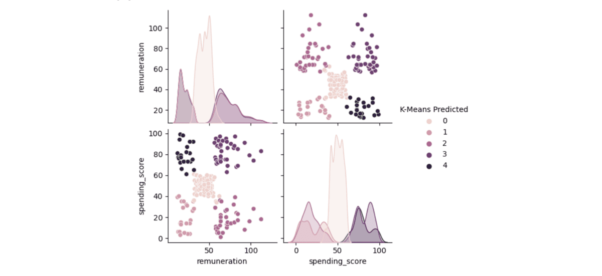

The question
How can customer behaviour and feedback inform segmentation and business decisions?
My approach
I explored spending, remuneration, age and loyalty using regression, evaluated K-means clustering with the elbow and silhouette methods, and examined recurring terms in customer reviews.
Findings & interpretation
Identify customer segments
The analysis selected five groups based on remuneration and spending patterns, offering a starting point for targeted marketing.
Evaluate relationships
Regression explored how spending, remuneration and age related to loyalty. These relationships need to be interpreted within the dataset.
Combine behaviour and feedback
Review text adds context to the quantitative analysis, including positive reactions and concerns about game complexity.
Project visualisations





Scope & limitations
Customer segments and recommendations are analytical findings. They do not demonstrate the outcome of a deployed campaign.